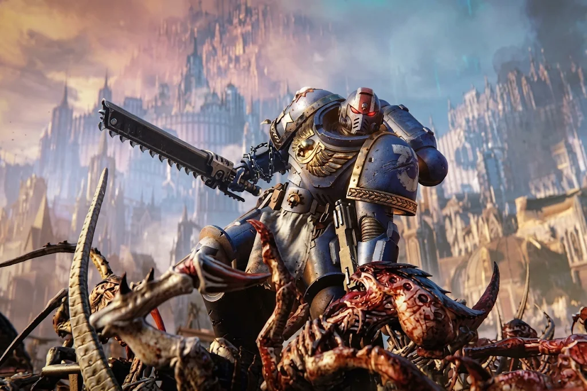

✠
EL IMPERIO
La humanidad lucha por sobrevivir bajo el dominio del Emperador.
EXPLORAR IMPERIO →EN EL AÑO 40.000 SOLO EXISTE LA GUERRA
Una galaxia consumida por la guerra, donde imperios luchan por sobrevivir y fuerzas oscuras amenazan con destruirlo todo.
REGISTROS IMPERIALES
Hace más de diez mil años, el Emperador de la Humanidad unificó la galaxia durante la Gran Cruzada. Hoy yace inmóvil en el Trono Dorado de Terra, mantenido con vida por el sacrificio de mil psíquicos cada día, mientras su Imperio abarca un millón de mundos.
En el milenio 31, Horus, el más amado de los Primarcas, traicionó a su padre tras ser corrompido por los dioses del Caos. La Herejía de Horus casi destruyó a la humanidad y dejó una herida que nunca cerró.
Hoy el Imperio resiste entre la herejía interna y los xenos: Orkos, Necrones, Tiránidos y muchos más. Por eso, en el 41.º milenio, solo existe la guerra.

BASE DE DATOS GALÁCTICA
Descubre las fuerzas que combaten por el destino de la galaxia.
La humanidad lucha por sobrevivir bajo el dominio del Emperador.
EXPLORAR IMPERIO →Los poderes de la disformidad buscan corromper y destruir el orden imperial.
EXPLORAR CAOS →CAMPO DE BATALLA
Forma tu ejército, selecciona tus personajes y enfréntate a otro jugador en una batalla estratégica por turnos.
ENTRAR A CARD FORGETRANSMISIONES IMPERIALES
 ▶
▶
Tráiler oficial de anuncio de Warhammer 40,000: Dawn of War IV.
VER EN YOUTUBE ↗ ▶
▶
Teaser oficial del anuncio de Warhammer 40,000: Astartes 2
VER EN YOUTUBE ↗RECURSOS EXTERNOS